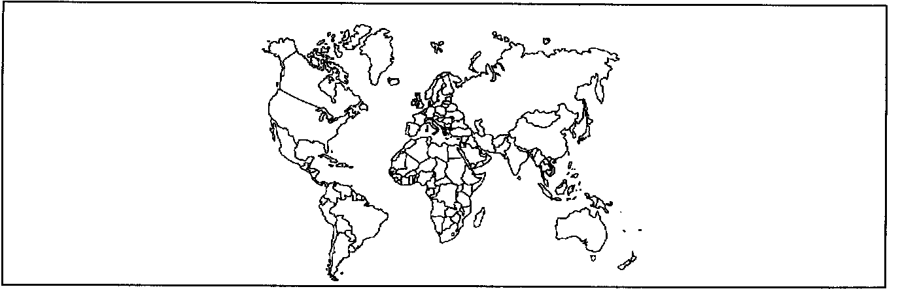

Installation Recommendations
DaimlerChryslerRadio Communication Equipment
Installation Recommendations

The following is excerpted from the owners manual of new DaimlerChrysler products:
"INSTALLATION OF RADIO TRANSMITTING EQUIPMENT
Special design considerations are incorporated into this vehicle's electronic system to provide immunity to radio frequency signals. Mobile two-way radio and telephone equipment must be installed properly by trained personnel. The following must be observed during installation.
The positive power connection should be made directly to the battery and fused as close to the battery as possible. The negative power connection should be made to body sheet metal adjacent to the negative battery connection. This connection should not be fused.
Antennas for two-way radios should be mounted on the roof or the rear area of the vehicle. Care should be used in mounting antennas with magnet bases. Magnets may affect the accuracy or operation of the compass on vehicles so equipped.
The antenna cable should be as short as practical and routed away from the vehicle wiring when possible. Use only fully shielded coaxial cable.
Carefully match the antenna and cable to the radio to ensure a low Standing Wave Ratio (SWR).
Mobile radio equipment with output power greater than normal may require special precautions.
All installations should be checked for possible interference between the communications equipment and the vehicle's electronic systems. A Technical Service Bulletin (TSB) is available for detailed assistance."
The owner's first line of contact regarding vehicle problems is the dealer. The literature supplied with each vehicle lists the steps to be taken in the event the dealer is unable to resolve the problem. To assist in properly installing communications equipment in DaimlerChrysler vehicles, the following information is provided. Always use good construction practices (see The ARRL Handbook or other standard reference works).
The information contained in this guide has been prepared for use by persons installing two-way radio equipment (transmitters and receivers) in vehicles. It has been prepared in accordance with current engineering principles and generally accepted practices, using the best information available at the time of publication. It is not possible to cover all of the possible installations of two-way radio equipment in this guide. Accordingly, DaimlerChrysler Corporation cannot be held responsible for incidental or consequent damages arising out of the use of the information contained herein. The responsibility for installations and modifications is the sole responsibility of the customer.
The installation recommendations presented here are intended to supplement the radio manufacturer's instructions. Test the entire installation for anomalies, especially drivetrain and brake control before extensive driving.
1. CONTROLS Mount the transceiver to a solid surface. If you use screws through the floor pan, put body sealer over the underbody projections. (Stamped acorn nuts, filled with sealer are available at most body shops for this purpose.) This will keep moisture out of the carpet and insulation, and will forestall rust in this area. Watch out for wire harnesses routed under carpet and behind instrument panel.
If you mount the radio under the instrument panel, be sure that there is no interference with proper operation of the foot controls. Mount the control head or front panel (especially the microphone cable) so that it is clear of the steering wheel and column controls and passenger airbag. If the unit is heavy, extra bracing may be needed for stability. Newer vehicles have more structure and energy absorbing materials in the knee blocker (the lower part of the Instrument Panel).
For one-piece transceivers, if ignition switch control is desired, it is good practice to use a power relay to avoid overloading the ignition switch, and to maintain the advantages of direct battery feed.
Try the installation out before you start drilling holes.
2. POWER WIRING To reduce the hazard of working on the vehicle, disconnect the battery NEGATIVE before beginning work. Note that some components may lose short-term memory (e.g.: radio presets) after a protracted time without battery power.
For low or medium power transmitters (up to 55W FM or 110W SSB or CW), the power outlet or cigar lighter feed may be used. Use a 1/4" jumper terminal at the socket or splice (solder and heat shrink or tape). For higher power transmitters, including amplifiers, connect the power (battery +) lead at the battery or at the power distribution center or at the positive jump-start post, if the vehicle has one. An appropriate terminal should be used. If the terminal is exposed to the weather, solder and apply a commercial protectant (wheel bearing grease is an acceptable alternative.) to retard corrosion. This lead should be fused as close to the battery as practical to protect the wiring (and the vehicle)! If the power connection is underhood, use a weatherproof fuse holder. Motorola Communications Division supplies a weatherproof holder, part number 09-84277B01 for 5AG cartridge fuses that is part of their standard installation kit. Packard Electric Division of Delphi Automotive Systems makes an insulator, part number 12033769, terminal number 12020156 with cover 12033731 for standard SAE plastic fuses.
Vinyl-insulated wire, typically supplied with transceivers is not entirely suitable for the higher underhood temperatures in modern vehicles. Route underhood wiring away from all hot areas. Body sheet metal, away from the exhaust, radiator, A/C liquid line and engine is usually the coolest location.
DO NOT FUSE THE GROUND LEAD. If the ground-side fuse were to open, the entire supply current would be conducted by an alternate current return path, which could cause the feedline to overheat, with possible resulting damage.
For low or medium power installations, connect the ground (battery -) to body sheet near the power feed point. If you use a screw through the floor, put body sealer over the underbody projection. (Stamped acorn nuts, filled with sealer are available at most body shops for this purpose.) For high power installations, connect the ground (battery -) lead at the battery connection to the body. This is usually a 6 or 8 AWG black wire from the battery negative terminal to a screw at the wheelhouse or radiator support. If a separate sheet metal ground is used, clean the paint off a one inch or so diameter area of body panel where the ground lead is to be connected (usually the case with commercial trunk mount radios). An awl is the best tool to use to pierce a starting hole for a #12 or 5mm, minimum plated ground screw. A ring terminal with lockwasher serrations of the proper size for the screw or a separate serrated (not a split or SAE) lockwasher should be used between the terminal and the screw head. As above, some grease or protectant should be used if the connection is in an unprotected area.
If the power cable must pass through the dash panel, try to find an existing hole with a grommet that is unused. If none is available, pull the carpet back from under the dash panel in the passenger footwell in the cabin. Locate a place where there are no other components on either side, as high up as possible. An awl is the best tool to use to punch a small hole through to the engine compartment. If the position is good, enlarge the hole by driving the awl in up to the shank. If this is not large enough to easily pass the cable, enlarge it by using a larger tapered punch. This will leave an extruded hole with no sharp edges. Install the cable and seal the hole with silicone RTV or commercial body sealer on both sides. Seal any extra holes that you may have made. Dress the underhood wiring so that it is sate from all hazards, which include the following: exhaust manifold, steering shaft, throttle linkage, fans, etc. Tie wrap as required.
3. CABLING Route control cables under the floor mats, inside the corner where the floor pan meets the rocker panel for best protection. Remove the sill plates and tuck the cable under the floor mats or carpet and padding. For most left hand drive vehicles, use the right side for best separation to the main body harness (usually on the left side).
Route the cable along the extreme outboard edge of the floor pan, under the side trim, if possible.
4. REMOTE TRANSCEIVER For trunk mount installations in passenger cars, you may need to remove the rear seat cushion and seat back to get the cable into the trunk. The seat cushion is usually clipped at the front, lower edge by its own frame: push down and back, then lift. Note the front and rear clipping points for ease of reinstallation. The seat back is usually clipped to the rear compartment inner panel: pull out at the bottom and slide up to remove. Again, note the clipping points for ease of reinstallation. There is usually a vapor/sound barrier behind the seat back, which must be pierced to pass the cable.
Open the trunk and pick a spot where the cable is safe from chafing on any sharp sheet metal. Tie wrap or tape in place at this location. Repair the barrier sheet if necessary. Replace the seat back and cushion, taking care that the cable is not pinched by the seat cushion when there is someone sitting in the seat. On some vehicles, there may be a channel for wiring at this location.
For remote control radios, a sheet of 1/2 in. plywood one or two inches larger than the radio, is a good method to mount the transceiver to the shelf. It provides a good mounting surface, some shock and vibration isolation, and it keeps moisture away from the radio. Mounting on the floor of the trunk is not recommended. To conserve trunk space, in some vehicles, the radio may be mounted to the rear compartment panel. Locate as far as possible from any vehicle electronic modules located in the rear of the vehicle.
In any case, provide good air circulation; a 50 watt RF output FM transmitter will dissipate about 22 watts (@70% efficiency). Do not pile things on top of the unit.
5. TRANSMISSION LINE The transmission line (coaxial cable) should be treated in the same way as the control and power cables. Route flat along body sheet metal wherever possible to avoid sharp edges and pinches. If it is necessary to cross over wiring, cross at right angles. In some cases, additional shielding between the transmission line and the vehicle wiring may be helpful. It is important to maintain the maximum spacing from the vehicle harnesses, especially if the antenna is not a good match. Use the best cable available (98-99% braid coverage or braid/foil) especially at UHF and above. Mechanical pressure on the cable can cause degradation or even short circuits. Do not rely on the obsolete military "RG" designations as an indicator of quality.
Cut off, do not coil excess transmission line (This forms a choke balun.) and terminate in the correct connector.
The use of N, BNC or C connectors is recommended over "UHF" (PL-259/S0-239) connectors. A small amount of silicone dielectric grease (not the white heat sink compound) in the connector (after soldering) will minimize condensation problems. Cut the line as short as practical, to minimize losses.
6. ANTENNA LOCATION Antenna location is the most important consideration in any mobile installation. For VHF and UHF antennas the recommended place on almost all vehicles is in the center of the roof. The center of the deck lid is an acceptable alternate. Glass-mounted antennas should be mounted at the very top edge of the clear portion of the glass away from the heater grid. Vehicles with printed-on-glass antennas may be damaged by through-glass installations.
For HF antennas, refer to the manufacturer's instructions and follow them closely, unless you are an accomplished antenna experimenter. HF antennas should be mounted to body or frame steel for a good counterpoise as well as structural strength. Aluminum bumpers are heavily anodized for corrosion protection, and the coating (aluminum oxide) is very hard as well as nonconductive. A small grinder with a coarse stone will break through the anodized coating for electrical connection.
7. ANTENNA INSTALLATION Permanently installed antennas are preferable over magnetic, glass or body-lip mounts for anything other than for low power or temporary installations. Most of these alternate antennas will reflect some power back at the feedpoint. Much of this will be radiated from the feedline inside the passenger compartment, and may be picked up by the vehicle wiring.
For deck lid installations, the deck lid must be bonded to the body, across the hinges, with short, wide tinned braid straps. They must connect to clean sheet metal at both ends. For AM/SSB and even some FM installations, the hood must be bonded to the body. In some cases the doors may need to be bonded, as well.
Glass-mount antennas will not work or will only work very poorly in vehicles with metallized glass (Electrically-heated windshields or some solar reflective glass). Non-metallic bodies (e.g., Viper) require a half-wavelength antenna or a ground plane with radius approximately equal to the length of a quarter-wave antenna. Copper is the best choice, but aluminum or even steel may be used. Install on the inside of the body panel with a good adhesive or tape and provide a good RF connection to the coax shield at the feedpoint. Screen, mesh or thin sheet stock may be used. Shape is not critical, but some directional characteristics may be noted if it is not round. Try to stay one-quarter wavelength away from edges, including sunroof openings. Consider the sunroof mechanism for interference to the base and to the feedline.
For VHF and UHF, a good quality "NMO" (New Motorola) base or other mount with feedline (center conductor and shield) soldered to base is recommended. This will allow the maximum flexibility in antenna selection and is the best choice for electrical and mechanical considerations. Use the proper hole saw (3/4 in. for NMO) or have it done professionally if you are not comfortable with power tools. Hole plugs are available, for use at sale or trade-in, if you expect to remove the antenna base.
To install the antenna base in the hole, remove the one or two-door trim pieces at the pillar where the cable is to be routed and ease the headliner away from the roof. Insert a piece of flat steel or plastic banding (1/2 in. to 3/4 in. wide) and guide to the desired corner. Pull the banding through, leaving 6 in., which can be taped, to the transmission line (easier without the connector, but possible even with a PL-259). Continue pulling until the antenna base is one inch or less from the hole, then seat the base and screw on the outside ring, 0-ring down. A little silicone grease helps maintain a good seal for the life of the vehicle. Tighten with an open-end wrench, and apply a small amount of silicone grease to the contact and insulator surface of the base. This will help exclude water, but must be renewed periodically. Tip: if you remove your antenna to go through the car wash, there are caps available to exclude water during the process.
In most vehicles, RG-58-sized cable will fit between the pillar trim and body sheet metal. If necessary, the technique used on the roof can also be used to snake the cable down the inside the pillar.
Install the connector very carefully. There are good instructions in The ARRL Handbook. Use a clean, hot, high-wattage iron and work quickly, to prevent damage to the cable dielectric. If you are a beginner or are not comfortable with this kind of detail work, ask for help. It is extremely important.
Electrical/Electronic Systems Compatibility Department
CIMS 481-47-20
DaimlerChrysler Corporation 800 Chrysler Drive East
Auburn Hills, MI 48326-2757